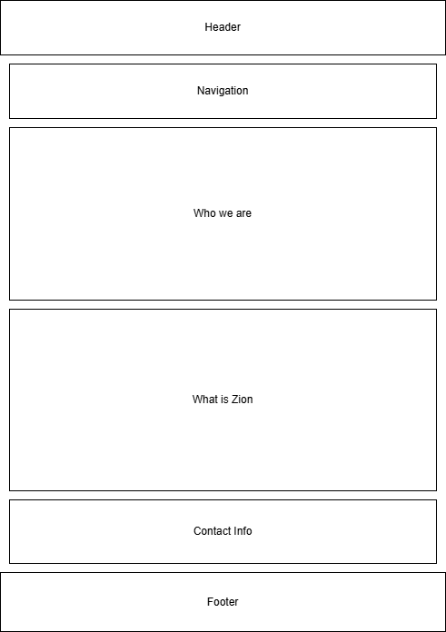
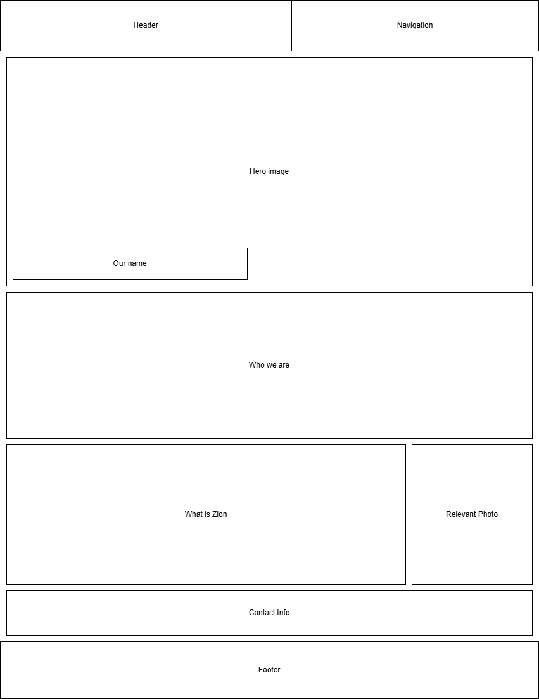

Site Name
The New Jerusalem - Zion
I called the site the New Jerusalem - Zion because Zion has differenct meanings depending on the context and I intend to talk about the biggest instance of the word, Independence Missouri. I wanted to talk about the past of Independence and our relation to the place and what's currently happening here.
Site Purpose
The purpose of this site will be to explain our past relations within Independence, including why we came here, and why we had to leave. It will also go into what we are currently doing here, which includes the Zion Story, a collection of media all about the history of us and those around us within Independence
Scenarios
- What is Zion?
- Why Independence Missouri?
- Where can I contribute to the Zion Story?
Color Schema
Purple
This will be used as background colors for the header and footer.
Light Yellow
This will be used as a background color for the main part of the page
Dark Blue
This will be used for the headings.
Black
Most other text will be in black
White
Any text over purple will be in white
Typography
The Typography I will be using for the entire page is Cause, because I feel like it gives more of a handcrafted and friendly look to the page.
Wireframes
Mobile View

Web View
